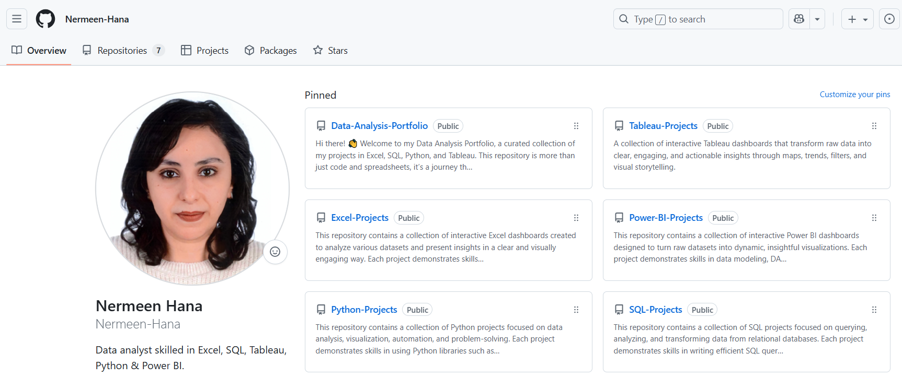
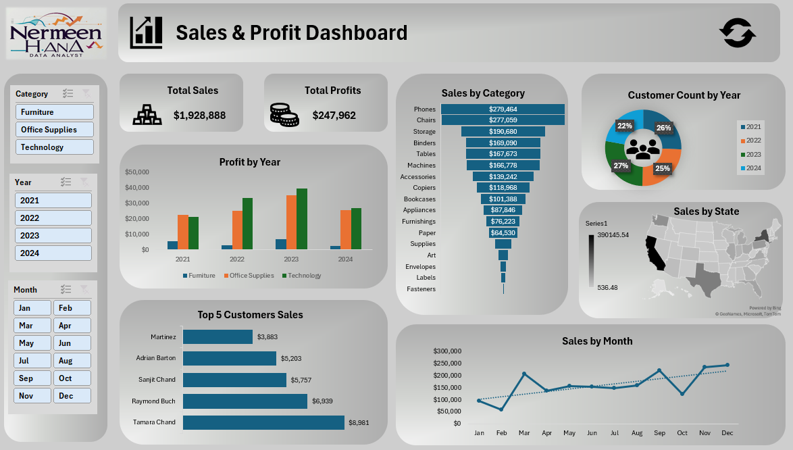
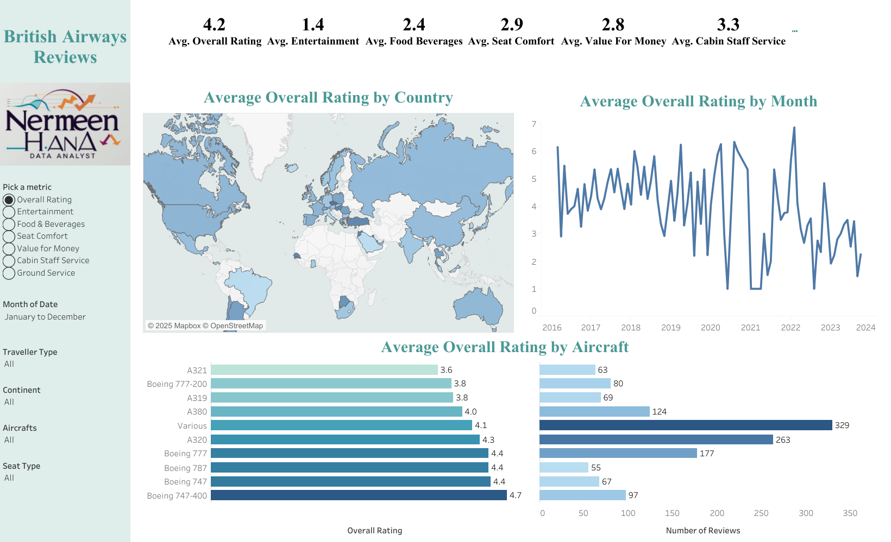
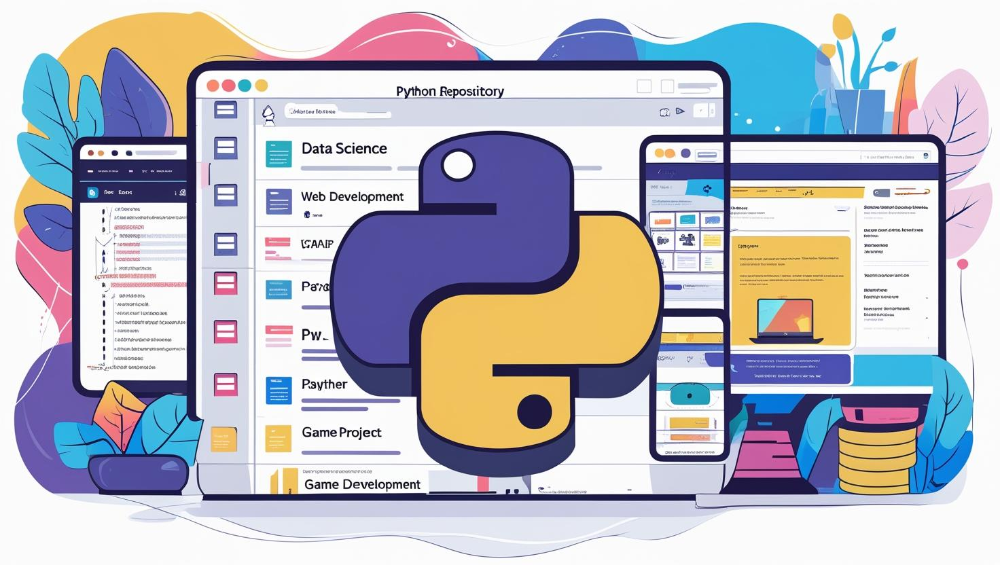
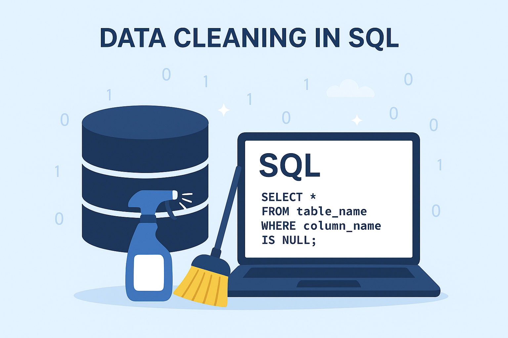
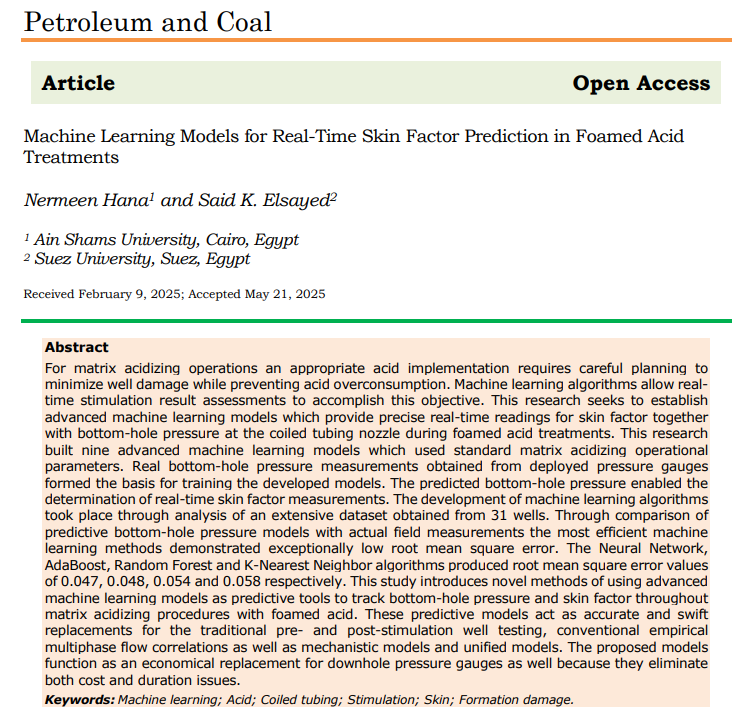

This GitHub repository showcases my personal portfolio website, featuring data analysis projects in Excel, Python, Tableau, and SQL. It highlights interactive dashboards, real-world datasets, and analytical solutions that demonstrate my skills in data cleaning, visualization, and storytelling.

In this interactive Excel dashboard, I track total sales, profits, customer activity, and product category performance over multiple years. It features KPI cards, charts, maps, and slicers that allow me to explore trends by region, month, and customer segment. Through this project, I was able to identify top-performing products, key customers, and opportunities for business growth.

In this interactive Tableau dashboard, I analyze customer reviews for British Airways across multiple service aspects, including overall rating, entertainment, food and beverages, seat comfort, value for money, cabin staff service, and ground service. The dashboard allows filtering by traveller type, continent, aircraft, seat type, and month, enabling a detailed exploration of customer feedback. Visualizations include a map of average ratings by country, a time-series chart of ratings over the years, and bar charts comparing ratings by aircraft type. This project helps uncover geographic trends, seasonal patterns, and differences in satisfaction across various travel experiences.

A collection of Python projects demonstrating skills in data cleaning, analysis, visualization, and automation. Each project applies industry-standard libraries such as Pandas, NumPy, Matplotlib, and Seaborn to solve real-world problems and generate actionable insights.

A collection of SQL projects showcasing skills in database design, querying, and data manipulation. Each project utilizes SQL to extract insights from complex datasets and demonstrate proficiency in relational database management.

In my peer-reviewed paper "Machine Learning Models for Real-Time Skin Factor Prediction in Foamed Acid Treatments", I used advanced data analysis and machine learning to process over 33,000 real field measurements from 31 wells. After rigorous data cleaning, preprocessing, and visualization, I developed and validated nine predictive models—achieving high accuracy and outperforming traditional methods. The work delivers real-time monitoring tools that reduce costs, improve efficiency, and optimize well stimulation operations.